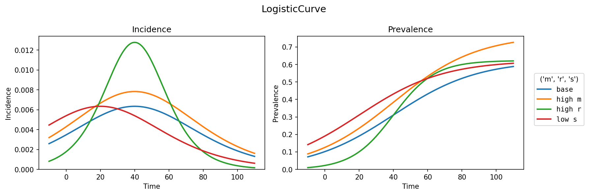

Getting Started¶
This tutorial will guide you through the basic steps to get started with the
vaxflux package, which is designed for modeling vaccine uptake prevalence
using various curve families. This particular tutorial introduces the core
concepts of the package, generates a synthetic dataset, how to fit a model to
this data, and steps for working with a fitted model.
Selecting A Curve Family¶
At the core of vaxflux is the concept of a curve family. A curve family is a
set of curves that share a common structure and are used for modeling the uptake
prevalence of a vaccine. Advanced users can also create their own curve families
to model different types of vaccine uptake patterns.
The logistic curve is a common choice for modeling vaccine uptake because it
captures the typical S-shaped curve seen in many vaccination campaigns, where
uptake starts slowly, accelerates, and then levels off as the population becomes
saturated with the vaccine. However, vaxflux makes some modifications to the
typical logistic curve to better suit the requirements of vaccine uptake
modeling. For details on how the logistic curve is defined in vaxflux, refer
to the vaxflux.LogisticCurve class
documentation.
The curve's plot method provides a quick way to visualize how different
parameter values affect the shape of the prevalence and incidence curves:
import jax.numpy as jnp
t = jnp.linspace(-10.0, 110.0, num=200)
logistic_curve.plot(
t,
parameter_sets=[
{"m": 0.5, "r": -3.2, "s": 40.0},
{"m": 1.2, "r": -3.2, "s": 40.0},
{"m": 0.5, "r": -2.5, "s": 40.0},
{"m": 0.5, "r": -3.2, "s": 20.0},
],
labels=["base", "high m", "high r", "low s"],
title="LogisticCurve",
)

Season And Date Ranges¶
In vaxflux, a season is defined as a period of time during which vaccine
uptake is measured. The package allows you to specify the start and end dates of
a season, which is crucial for modeling vaccine uptake patterns over time. These
are specified to the model using the
vaxflux.SeasonRange class. Within each
season, you can define a date range that represents the period during which
vaccine uptake is observed, which is done using the
vaxflux.DateRange class. For this example
we will create a season that starts the 1st Monday of October and ends the 1st
Sunday of the following February for the 2022/23, 2023/24, and 2024/25 seasons.
Then we'll define date ranges for each of these seasons that span a week using
the vaxflux.daily_date_ranges
function. The daily_date_ranges function generates a list of date ranges for
each season, where each date range represents a period of time during which
vaccine uptake is observed. The range_days argument specifies the number of
days in each date range where ranges are defined start date inclusive end date
exclusive.
from vaxflux import DateRange, SeasonRange, daily_date_ranges
seasons = [
SeasonRange(season="2022/23", start_date="2022-10-03", end_date="2023-02-05"),
SeasonRange(season="2023/24", start_date="2023-10-02", end_date="2024-02-04"),
SeasonRange(season="2024/25", start_date="2024-10-07", end_date="2025-02-02"),
]
dates = daily_date_ranges(seasons, range_days=6)
Defining Covariates¶
In vaxflux, covariates are additional variables that can influence vaccine
uptake patterns. These can include demographic information, geographic data, or
any other relevant factors. Covariates and their categories are defined using
the vaxflux.CovariateCategories
class. In this example, we will create a single "age" covariate with three
categories, "youth", "adult", and "elderly", which loosely correspond to 0-17
yrs, 18-65 yrs, and 65+ yrs, respectively. This covariate will be used to model
how vaccine uptake varies across different age groups.
from vaxflux import CovariateCategories
age_covariate = CovariateCategories(
covariate="age",
categories=["youth", "adult", "elderly"],
)
Create A Sample Dataset¶
As a first step in using the package you can create a sample dataset with
vaxflux.data.sample_dataset. This
will create a dataset with the same data generating process that the model
assumes in the format needed for vaxflux. The function requires a curve
family, a list of seasons and dates, a list of covariates, a list of parameters
for the curve family for each covariate category, an observational noise level,
and a random seed for reproducibility. Many of these arguments have already been
defined in the previous sections.
The parameters are defined as a list of tuples, where each tuple contains the
curve family parameter name, season, covariate category/categories, and the
value for that parameter. The parameters for a logistic curve can be found in
the vaxflux.LogisticCurve
documentation, but in brief they are:
- \(m\): The max uptake prevalence, which is the maximum value of the logistic curve.
- \(r\): The rate of change of the uptake prevalence, which determines how quickly the curve rises.
- \(s\): The switch point of the curve, which is the inflection point of the prevalence curve.
The epsilon argument defines the observational noise level. By default,
observations are drawn with gamma noise; you can switch to a normal noise model
by passing noise="normal" to sample_dataset.
from vaxflux.data import sample_dataset
parameters = [
("m", "2022/23", "youth", -0.5),
("m", "2022/23", "adult", 0.5),
("m", "2022/23", "elderly", 1.2),
("r", "2022/23", "youth", -3.2),
("r", "2022/23", "adult", -3.2),
("r", "2022/23", "elderly", -3.2),
("s", "2022/23", "youth", 40.0),
("s", "2022/23", "adult", 40.0),
("s", "2022/23", "elderly", 40.0),
("m", "2023/24", "youth", -0.525),
("m", "2023/24", "adult", 0.53),
("m", "2023/24", "elderly", 1.235),
("r", "2023/24", "youth", -3.1),
("r", "2023/24", "adult", -3.1),
("r", "2023/24", "elderly", -3.1),
("s", "2023/24", "youth", 42.0),
("s", "2023/24", "adult", 42.0),
("s", "2023/24", "elderly", 42.0),
("m", "2024/25", "youth", -0.51),
("m", "2024/25", "adult", 0.52),
("m", "2024/25", "elderly", 1.22),
("r", "2024/25", "youth", -3.0),
("r", "2024/25", "adult", -3.0),
("r", "2024/25", "elderly", -3.0),
("s", "2024/25", "youth", 44.0),
("s", "2024/25", "adult", 44.0),
("s", "2024/25", "elderly", 44.0),
]
sample_observations = sample_dataset(
logistic_curve,
seasons,
dates,
[age_covariate],
parameters,
0.0005,
noise="gamma",
random_seed=42,
)
Defining A Model¶
Now that many of the building blocks of the model have been defined we can
create a model represented by the
vaxflux.VaxfluxModel class. This class
encapsulates the entire modeling process, including the curve family, seasons,
dates, covariates, and the sample dataset. Many of the arguments to this class
have already been defined in the previous sections, but we will also need to
define the prior distributions for the covariates that will be used in the
model.
In this example we will use partially pooled Gaussian covariates for seasonal
effects and an age effect on the max uptake parameter. The
vaxflux.PartiallyPooledGaussianCovariate
class provides a convenient way to express these priors in the NumPyro-based
model. Note that the priors are loosely centered around the values used to
generate the sample dataset, but they are not exact. This is because the model
will learn the parameters from the data, and the priors are used to inform the
model about reasonable ranges for these parameters. For more information on
model details and how to inform prior distributions please refer to the
model-details section of the documentation.
from vaxflux import PartiallyPooledGaussianCovariate, VaxfluxModel
covariates = [
PartiallyPooledGaussianCovariate(
parameter="m",
covariate=None,
mu=(0.0, 0.75),
sigma=0.75,
),
PartiallyPooledGaussianCovariate(
parameter="r",
covariate=None,
mu=(-2.5, 1.5),
sigma=1.5,
),
PartiallyPooledGaussianCovariate(
parameter="s",
covariate=None,
mu=(35.0, 20.0),
sigma=20.0,
),
PartiallyPooledGaussianCovariate(
parameter="m",
covariate="age",
mu=(1.0, 1.0),
sigma=1.0,
),
]
model = (
VaxfluxModel(curve=logistic_curve)
.add_seasons(seasons)
.add_dates(dates)
.add_covariate_categories(age_covariate)
.add_covariates(covariates)
.add_observations(sample_observations)
.add_observation_process(
kind="normal",
noise=0.005,
partially_pool_by_season=False,
prevalence_penalty=10.0,
)
)
Fitting The Model¶
Finally, we can fit the model to the sample dataset using the
vaxflux.VaxfluxModel.sample
method. This method handles prior predictive sampling, MCMC fitting, and
posterior predictive sampling in one call. In this example, we will run a small
prior predictive sample and then fit with 2,000 warmup steps, 1,000 samples, and
2 chains. The return value is a
VaxfluxInferenceData object
compatible with ArviZ.
If you are following along with this tutorial with a REPL or notebook please
note that the following code will take anywhere from a few seconds to a few
minutes to run. Adjust the arguments to sample appropriately.
vaxflux_idata = model.sample(
prior_samples=500,
warmup=2_000,
samples=1_000,
chains=2,
)
vaxflux_idata
Conclusion¶
In this tutorial, we have covered the basic steps to get started with the
vaxflux package and the key building blocks that are used to create a model.
Like this tutorial, when using vaxflux the loose steps to construction a model
are:
- Select a curve family that represents the vaccine uptake pattern you want to model.
- Define the seasons and date ranges for the model.
- Define the covariates and their categories that will be used in the model.
- Either loading or creating a dataset that contains the vaccine uptake data.
- Define the model using the
VaxfluxModelclass, including the curve family, seasons, dates, covariates, and observations. - Fit the model to the data using the
samplemethod.